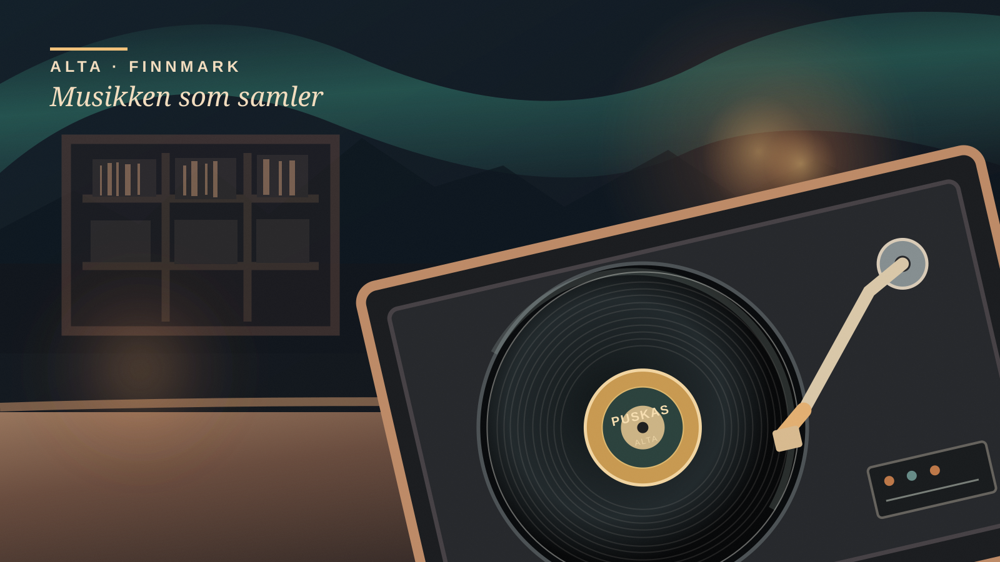

Feature · Kultur · Alta
De spiller ikke bare musikk. De bygger et fellesskap.
Hva får en platebar i Alta til å slå restauranter, kafeer og til og med et legekontor i en landsomfattende musikkavstemning? Historien om Puskas handler om hva som skjer når musikken ikke bare fyller stillheten, men gir et sted særpreg og mennesker en grunn til å komme tilbake.

Det finnes steder hvor musikken er valgt for ikke å bli lagt merke til. Så finnes det steder hvor den forteller gjestene hvor de har kommet. I Alta har Puskas Musikk & Platebar gjort det siste til et kjennetegn. Fredag 13. november ble stedet utropt til vinner av TONOs publikumsavstemning om Norges beste bakgrunnsmusikk 2026.
At prisen gikk til en platebar, er nesten et paradoks. Ordet bakgrunnsmusikk får oss til å tenke på noe som ligger bak samtalen, kaffekoppen eller handleturen. På Puskas er det nettopp interessen for musikken som har vært en del av selve ideen. Det handler ikke om at alle må lytte andektig, men om at noen har brydd seg med hva som spilles, og hvem stedet skal være for.
«Folk ønsker å se mangfold, men mer enn noe annet føle tilhørighet.»Ruth Reinup, daglig leder i Puskas, sitert i TONOs pressemelding 13. november 2026
Utsagnet oppsummerer også en større historie: En god spilleliste kan gi stemning, men en møteplass må bygges over tid. I TONOs omtale beskrives Puskas som et sted med klassisk rock, mindre norske artister og et tydelig engasjement for rettferdighet og solidaritet. Det er TONOs og stedets egen beskrivelse, ikke en uavhengig måling av atmosfæren.
Fra platebutikk til byens musikkrom
Navnet Puskas tilhørte opprinnelig en kjent musikkbutikk i Alta på 1980- og 1990-tallet. I 2018 kjøpte en ny gruppe stedet og videreutviklet virksomheten. Allerede samme høst skrev musikknettstedet Ballade om Puskas som en «musikkhub»: Platehandel, servering og musikkvirksomhet under samme tak. Den gang fortalte Torgeir Ekeland om ambisjonen om å løfte fram musikklivet i Finnmark. Omtalen dokumenterer hvor konseptet kom fra; den sier ikke hvem som har hvilke roller i dag.
Sporet er synlig også i nyere konsertprogrammer. Den 3. oktober i år var Puskas vertskap for plateslippet til John-Kåre Hansen Fantasia. Utgivelsen Guoldu inngår i musikerens Finnmark Fantasia-prosjekt. Her er poenget med platebaren konkret: Musikken er ikke bare noe man hører mens man gjør noe annet. Den får også et publikum, et fysisk rom og en anledning.
Og aktivitetene er bredere enn konserter. I en stillingsutlysning høsten 2026 beskrev Puskas selv et program med musikkbingo, burlesk, plateprat, bok- og vinylutgivelser og vanlige pubkvelder. Utlysningen er en kilde til hva arrangøren sier at stedet rommer – ikke en rapport fra arrangementene.
Hva er egentlig en god musikalsk bakgrunn?
Det var ikke en ekspertjury som kåret landets objektivt beste lydanlegg eller mest teknisk perfekte låtutvalg. Ifølge TONOs presentasjon av finalistene kom det inn 75 nominasjoner. En jury med TONO og artisten Gunn Kvaale valgte fem finalister, før publikum stemte på sin favoritt. Prisen viser altså at Puskas mobiliserte støtte i en avstemning – ikke at musikken ble målt etter en nasjonal lydstandard.
De andre finalistene illustrerer hvor ulik funksjon musikk kan ha: Bula Neobistro i Trondheim, Saga Med legesenter i Sandnes, Skyskraperen Restaurant på Ulriken i Bergen og Venus Café og Bar i Lillestrøm. På et legekontor kan musikken skjerme og roe; på en restaurant kan den forsterke matopplevelsen; på en platebar kan den bli grunnen til at folk møtes.
Slik ble prisen avgjort – se kåringens metode
Publikum foreslo 75 kandidater. TONO og Gunn Kvaale valgte fem finalister. Deretter stemte publikum fram Puskas. TONO arrangerer kåringen for å synliggjøre bevisst bruk av musikk i kundelokaler. Dette er andre gang prisen deles ut: I 2025 vant REMA 1000 Korskirkekvartalet i Bergen. Kilde: TONOs kåringsbeskrivelse og vinnerkunngjøringen.
TONO er samtidig en interesseorganisasjon for komponister, tekstforfattere og musikkforlag, og forvalter betaling for offentlig bruk av opphavsrettslig beskyttet musikk. Kåringen er derfor også en påminnelse om verdien TONO mener musikken skaper for næringslivet. Det gjør ikke Puskas' seier mindre interessant, men det forteller hva prisen er laget for å fremheve.
Mandag 16. november klokken 14 skal prisen etter planen overrekkes på Puskas, fulgt av en intimkonsert med Gunn Kvaale. Arrangementet ligger fortsatt fram i tid når denne artikkelen publiseres. At kåringen ble kunngjort fredag den 13., gir vinneren en ny anledning til å fylle det samme rommet med både musikk og mennesker.
Det er kanskje dét historien fra Alta sier aller mest om: Vi husker ikke alltid hva som sto på spillelisten. Men vi husker ofte et sted hvor det føltes som om noen hadde valgt musikken med oss i tankene.
Kilder og les videre
- TONO, 13.11.2026 – vinner, intervjuuttalelse, prisoverrekkelse og finalister.
- TONO, 02.11.2026 – nominasjoner, jury og publikumsavstemning.
- Ballade, 24.10.2018 – uavhengig historisk intervju om etableringen og musikksatsingen.
- Jazz i Norge, 03.10.2026 – eksempel på dokumentert plateslipp ved Puskas.
- Alta kommunes kulturkalender – tidspunkt og arrangør for samme plateslipp.
- Puskas' stillingsutlysning, 28.09.2026 – stedets egen beskrivelse av arrangementstyper.
Metode: Feature basert på tilgjengelige, navngitte kilder. Paradisavisa har ikke vært til stede på Puskas eller gjennomført eget intervju. Scener, publikumsreaksjoner og interiør er ikke diktet opp. Kåringen omtales som en publikumspris, ikke en objektiv kvalitetsmåling.